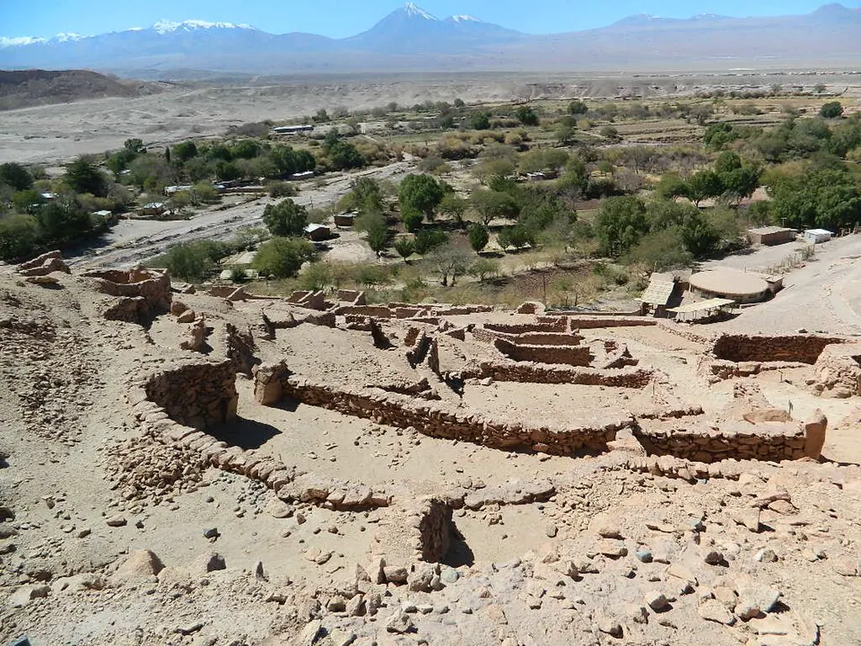

Los oasis de San Pedro de Atacama

La cuenca del salar de Atacama y el río Loa, en pleno Desierto de Atacama, fueron habitados por cazadores y recolectores desde hace miles de años. Con el tiempo, sus habitantes se volvieron agricultores y pastores, y formaron aldeas como Tulor, de casas circulares de barro, cerca de San Pedro de Atacama.
Hacia el 400 d.C. comenzó un periodo de gran desarrollo. Las comunidades de los oasis, antepasadas del Pueblo Lickanantay, cultivaban gracias a canales de regadío, criaban llamas y organizaban caravanas que conectaban la costa del Pacífico, el altiplano y el noroeste de la actual Argentina. Por esas rutas circulaban alimentos, tejidos, cerámica, minerales y conchas marinas. En esta etapa, San Pedro recibió una fuerte influencia de Tiwanaku, centro político y religioso cercano al lago Titicaca, visible en tejidos, vasos y tabletas de madera tallada usadas en rituales.
Siglos después se levantaron fortalezas como el Pukará de Quitor y la zona fue incorporada al Imperio inca. El sacerdote jesuita Gustavo Le Paige reunió en el siglo XX una gran colección arqueológica, base del museo que lleva su nombre. Hoy los lickanantay mantienen ceremonias ligadas al agua y al territorio.
Versión para niños
En medio del Desierto de Atacama, el desierto más seco del mundo, hay oasis con agua, árboles y cultivos. Allí vive desde hace miles de años el pueblo lickanantay, también llamado atacameño. Sus antepasados cultivaban maíz, porotos, zapallos y quínoa gracias a canales de regadío. Criaban llamas y viajaban en caravanas para intercambiar productos con pueblos de la costa, del altiplano y del otro lado de la cordillera. También recogían frutos de árboles como el chañar y el algarrobo.
Para maestros
Nivel sugerido: 2° básico
Objetivo: Comprender cómo el pueblo lickanantay se adaptó al desierto mediante la agricultura de oasis, el pastoreo y el intercambio. La fecha lleva "c." porque marca de forma aproximada el inicio de un periodo de auge reconocido por la arqueología, no un hecho puntual.
Preguntas para la clase:
- ¿Cómo se puede cultivar en el desierto más seco del mundo?
- ¿Para qué servían las caravanas de llamas?
- ¿Qué productos crees que llevaban y traían?
Actividad (20–30 min): "Juego de la caravana": la clase se divide en grupos que representan la costa, el oasis y el altiplano. Cada grupo tiene productos propios (pescado seco, maíz, lana) y debe intercambiarlos para reunir lo que necesita. Al final se reflexiona sobre la importancia del intercambio entre pueblos.
Fuentes sugeridas: Museo Chileno de Arte Precolombino; Memoria Chilena; Biblioteca Nacional Digital.
Objetivos de Aprendizaje (Currículum Nacional)
- 2° básico · HI02 OA 01 Describir los modos de vida de algunos pueblos originarios de Chile en el periodo precolombino, incluyendo ubicación geográfica, medio natural en que habitaban
- 2° básico · HI02 OA 11 Relacionar las principales características geográficas (disponibilidad de agua, temperatura y vegetación) de las zonas habitadas por algunos pueblos originarios de Chile
- 1° medio · HI1M OA 24 Evaluar … las relaciones de conflicto y convivencia con los pueblos indígenas (aymara, colla, rapa nui, mapuche, quechua, atacameño, kawéskar, yagán, diaguita)
Revisión humana pendiente. Cómo se revisa · Reportar un error
Cómo citar: Historia de Chile. (2026). Los oasis de San Pedro de Atacama. En Historia de Chile: atlas y línea de tiempo. https://moises-salgado.github.io/historia-de-chile/momento/los-oasis-de-san-pedro-de-atacama.html